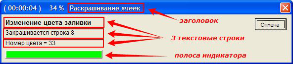
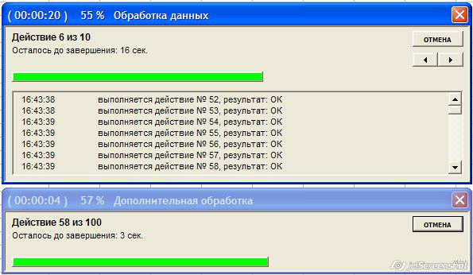
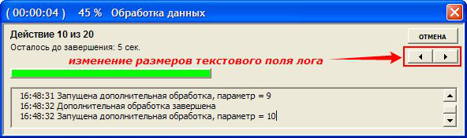

Данный прогресс-бар позволяет отображать ход выполнения любого макроса.
Для использования этого индикатора перетащите из файла-примера в свой файл модуль класса ProgressIndicator и форму F_Progress
Использовать прогресс бар сравнительно просто - достаточно добавить в макрос несколько строк кода:
Sub ПростейшийПримерИспользованияПрогрессБара()
Dim pi As New ProgressIndicator ' создаём новый прогресс-бар
pi.Show "Подождите, работает макрос" ' отбражаем индикатор
' здесь код вашего макроса
pi.Hide ' закрываем индикатор
End Sub
Sub ПримерИспользованияПрогрессБара()
КоличествоЗапусковВнешнегоМакроса = 3000
Dim pi As New ProgressIndicator ' создаём новый прогресс-бар
pi.Show "Форматирование ячеек" ' отбражаем индикатор
' первое действие (на шкале индикатора от 0 до 95 процентов) - это окраска ячеек
pi.StartNewAction 0, 95, "Окраска ячеек", , , КоличествоЗапусковВнешнегоМакроса
' цикл с вызовом внешнего макроса "ФорматированиеЯчейки"
For i = 1 To КоличествоЗапусковВнешнегоМакроса
' инициируем очередное действие в индикаторе
pi.SubAction , "Обрабатывается ячейка $index из $count", "$time"
' собственно, код цикла
ФорматированиеЯчейки i
Next
' всё покрасили - теперь пора чистить ячейки )
pi.StartNewAction 95, 100, "Очистка ячеек"
Cells.Clear
pi.Hide ' закрываем индикатор
End Sub
Sub ФорматированиеЯчейки(ByVal n As Long) ' вызываемый макрос
Cells(n).Interior.ColorIndex = 15: Cells(n).BorderAround xlContinuous
End Sub
Давайте рассмотрим подробнее работу с индикатором.
Прогресс-бар выполнен в виде модуля класса, поэтому, для начала работы с ним,
надо прежде всего создать экземпляр этого класса:
Dim pi As New ProgressIndicator ' создаём новый прогресс-бар
Итак, прогресс-бар создан, и теперь надо его отобразить.
Для этого мы используем метод Show объекта типа ProgressIndicator:
pi.Show "Форматирование ячеек" ' отбражаем индикатор
При использовании метода Show мы сразу задаём заголовок индикатора (можно здесь указать название вашего макроса)
Индикатор появился на экране - но полоса не отображается, ибо процент выполнения по-умолчанию равен нулю.
Для каждого действия мы будем задавать начальный и конечный процент выполнения задачи
К примеру, если первое действие вашего макроса занимает по времени примерно пятую часть от времени выполнения всего макроса,
то мы укажем интервал для индикатора от 0% до 20%:
pi.StartNewAction 0, 20
Как вы заметили, для запуска очередного действия используется метод StartNewAction объекта ProgressIndicator.
При вызове этого метода можно сразу задать текст для каждой из 3 текстовых строк индикатора:
pi.StartNewAction 0, 20, "Текст первой строки", "Текст строки 2", "Текст строки 3"

Если действие состоит из нескольких отдельных "поддействий", то можно также сразу задать и количество этих "поддействий"
(например, основное действие - это форматирование ячеек (от 0% до 20% индикатора), а поддействия - это окраска отдельных ячеек (первая строка - от 0% до 1% индикатора, вторая строка - от 1% до 2%, и т.д.))
Чтобы нам не мучиться с расчётами этих процентов, мы просто задаём количество действий (например, количество форматируемых ячеек, равное 3000),
и индикатор сам разделит диапазон от 0% до 20% на 3000 равных частей, плавно увеличивая длину полосы индикатора по мере форматирования отдельных ячеек.
pi.StartNewAction 0, 20, "Окраска ячеек", , , 3000
Чтобы уведомить индикатор об очередном "поддействии" внутри цикла, мы используем метод SubAction объекта ProgressIndicator
' инициируем очередное действие в индикаторе
pi.SubAction , "Обрабатывается ячейка $index из $count", "$time"
Как вы могли заметить, мы задали только значение второй и третьей строки индикатора, не указав никакого текста для первой строки.
В этом случае (если значения некоторых из 3 строк индикатора не заданы), эти строки не изменяются
(в первой строке индикатора останется текст, заданный ранее при использовании метода StartNewAction)
Кроме того, в тексте для строк индикатора можно использовать следующие ключевые слова:
- $index и $count - для вывода строк типа "Обрабатывается ячейка 515 из 3000",
- $time - для вывода ожидаемого времени до окончания макроса
(макрос анализирует текущий процент выполнения и затраченное время, и предсказывает, сколько времени осталось до окончания всех действий)
Если же необходимо просто увеличить длину полоски индикатора - можете использовать метод SubAction без параметров:
pi.SubAction
Вы можете выводить сколько угодно действий в индикаторе, причем совсем не обязательно, чтобы начальный процент очередного действия был равен конечному проценту предыдущего.
Вполне допустим следующий код:
pi.StartNewAction 5, 20, "Действие 1" ' начинаем не с нуля
pi.StartNewAction 20, 50, "Действие 2" ' начинается сразу после предыдущего
pi.StartNewAction 35, 60, "Действие 3" ' начинается раньше предыдущего
pi.StartNewAction 85, 90, "Действие 4" ' начинается через время после предыдущего
pi.StartNewAction 10, 100, "Действие 5" ' начинаем почти всё сначала
По окончании макроса желательно закрыть прогресс бар:
pi.Hide ' закрываем индикатор
У объекта ProgressIndicator имеется много различных свойств и методов.
Вкратце расскажу о некоторых свойствах:
- свойство Caption позволяет задать новый заголовок индикатора
- свойство FP позволяет получить доступ к отображаемой форме (и всем её элементам управления)
(например, код pi.FP.PrintForm выведет индикатор на печать) - свойства Line1, Line2 и Line3 позволяют в любом месте кода задать текст конкретной строки индикатора
- свойства ShowPercents и ShowTime включают или выключают отображение процента выполнения и времени в заголовке индикатора
(по умолчанию оба свойства имеют значение TRUE, т.е. в заголовке отображается и время, и процент выполнения макроса)
Из функций объекта мы рассмотрим только одну: AddChildIndicator
Эта функция создаёт дочерний прогресс бар, и отображает его выше или ниже родительского:
' создаём дочерний индикатор, и выводим его ниже основного
Dim pi2 As ProgressIndicator
Set pi2 = pi.AddChildIndicator("Раскрашивание ячеек", 1)
При изменении процента выполнения в дочернем индикаторе пропорционально меняется и процент выполнения главного (родительского) прогресс-бара.
В прикреплённом файле, помимо модуля класса и формы индикатора,
присутствует также стандартный модуль с несколькими примерами использования прогресс-бара.
На индикаторе присутствует кнопка «Отмена» - её нажатие вызывает останов всех запущенных макросов
(выполняется команда End, останавливающая все макросы, и обнуляющая все переменные)
Поскольку у этой кнопки свойство Cancel установлено в TRUE, нажатие на клавиатуре клавиши ESC равносильно нажатию кнопки «Отмена»
(при нажатии Esc макрос останавливается)
добавлено 23.02.2012
Новая версия прогресс-бара - с поддержкой отображения лога на индикаторе, и возможностью отображения лога в виде текстового файла.

Высоту текстового поля с логом можно изменять:

Новая версия индикатора, и примеры его использования - во втором прикреплённом файле.
PS: Идеальный прогресс-бар должен работать так :)
|
Вложение |
Размер |
Загрузки |
Последняя загрузка |
|
103.5 КБ |
62 |
4 дня 11 часов назад | |
|
131.5 КБ |
60 |
2 недели 4 дня назад |
- 80702 просмотра